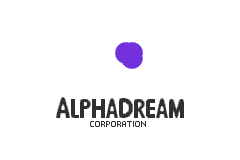

Hamtaro - Rainbow Rescue (USA) (Proto) (2003-07-29)
SRAM 256K Save Format Spec gbakit Built-In Debug Menu Patch 📺 Joybus 💾 MultiBoot
Cartridge Identity
- Game Code
A84E(FamilyA84)- Header Title
HAMUTARO4- Maker / Revision
01/ rev0- ROM Size
- 16.0 MiB (16,777,216 B)
- Save Media
SRAM 256K- SHA-256
2e3a8e3962c9d5fb0b7df6eff828995c9630a04d659945f797985e1a77fe053f- Engine / SDK Group
comm-001(196 families)
Screenshots

Debug Menu Re-Enablement Patch (.ips)
Download A84E-debug.ips (15 B IPS / 2 B delta)
- Hook Mechanism
thumb_branch_nop_override· Patch conditional branch at 0x080819dc (beq -> nop) to force fall-through into debug menu branch (0x08084378)- IPS SHA-256
d9ced2a2af75ac3d1cfc4b4b2bfa19fa32001eeba9438a7b9f1bbb0fa2cbbdde
gbakit patch apply A84E-debug.ips original.gba patched-debug.gba

Link Cable & Multiplayer Communications
This title contains detected communication capabilities: 📺 Joybus 💾 MultiBoot.
Detailed protocol specifications, SIO registers, Joybus commands, and MultiBoot sequences are documented in the Link & Multiplayer Reference.
- GameCube Joybus
- Register literal
REG_JOYCNT(0x04000140) at offset0x05fa1c - Single-Cart MultiBoot
- Single-Cartridge MultiBoot (Download Play) client/server handler · Thumb SWI 0x25 (
0xDF25):0x2127e2,0x3ba662
Battery Save Format Specification
Open Full Save Format SpecDownload Sample .sav (32,768 B)Download save-format.json
- Specification Coverage
- 21 mapped fields · 1 verified checksum(s) · Confidence: MEDIUM
- gbakit Built-In Support
- Built-in (A84E)
- Emulator Verification
- Checksum enforced: No · Repaired save accepted: Yes
gbakit save verify A84E save.sav
gbakit save decode A84E save.sav
gbakit save fix A84E damaged.sav -o repaired.savROM Assets, Compression & Audio
- BIOS Compression
- LZ77 (
0x10): 1 streams · RLE (0x30): 1 streams - ROM Pointer Tables
- 64 tables (0 pointing to validated compressed streams)
- SDK Backup Tags
SRAM_V112
Text, Fonts & Scene Data
- Primary Text Encoding
- 16-bit / UTF-16LE text (
50ASCII strings ·23Shift-JIS runs) - Font & VWF Indicators
- No VWF Table 1bpp Font · BIOS SWIs: BitUnPack
0x10:2· LZ770x11/12:61· Huffman0x13:2· RLE0x14/15:2 - Scene & Packaging
38ROM pointer tables (≥32 entries,13≥200) ·35relativeu32TOCs ·164OAM metasprite hits
Hardware MMIO Subsystems
ppu_display0x8081e48,0x80821e8,0x8082800,0x8085848,0x808c988,0x80b7f40,0x80b961c,0x80b98f8,0x80b9920save_bus_sram_flash0x809dbe4,0x809dea0
Regional Variants & Revisions (Family A84)
- Hamtaro - Rainbow Rescue (Europe) (En,Fr,De,Es,It) (
A84P, 16 MiB) - Tottoko Hamutarou 4 - Nijiiro Daikoushin Dechu (Japan) (
A84J, 8 MiB)